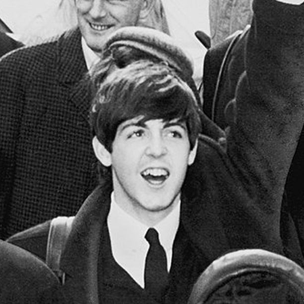
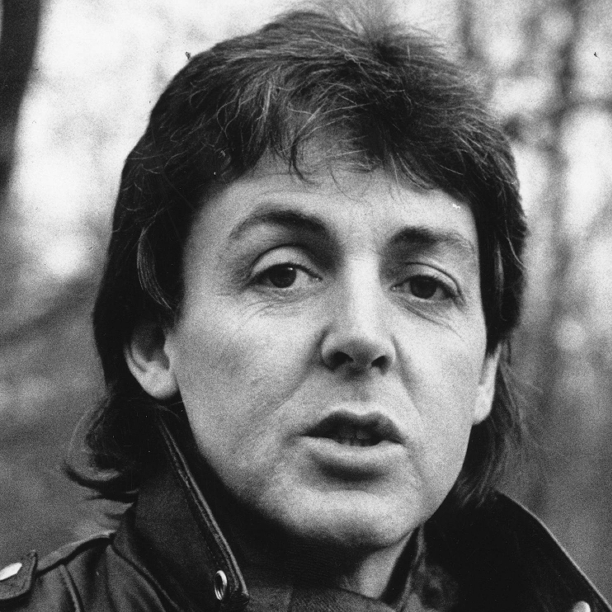

1. Sir James Paul McCartney (Liverpool, 18 giugno 1942) è un cantautore, compositore, polistrumentista, produttore discografico e attivista britannico.

2. Ha raggiunto la fama internazionale come bassista dei Beatles insieme a John Lennon, George Harrison e Ringo Starr. Insieme a Lennon formò una delle coppie di compositori di maggior successo di tutti i tempi, scrivendo alcune delle canzoni più acclamate nella storia della musica contemporanea.

3. Dopo lo scioglimento dei Beatles, ha formato i Wings con la sua prima moglie, Linda Louise McCartney, il compositore Denny Laine e altri musicisti. In seguito ha lavorato da solista componendo anche colonne sonore, musica colta e musica sperimentale, pubblicando una grande quantità di singoli e prendendo parte attivamente a progetti di sostegno ad associazioni benefiche internazionali.
4. Padre della stilista britannica Stella McCartney, è anche noto per essere un sostenitore del vegetarismo, dei diritti degli animali, dell'obbligo dell'educazione musicale nelle scuole e delle campagne sulla cancellazione del debito del Terzo Mondo; al tempo stesso si batte contro le mine antiuomo e la caccia alla foca. Tra le molteplici attività secondarie di McCartney si ricordano quelle di attore, pittore, poeta e scrittore.